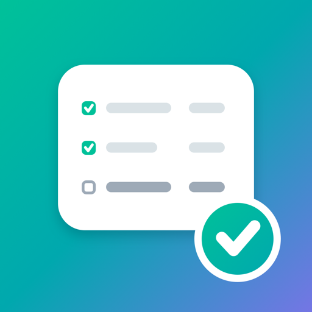
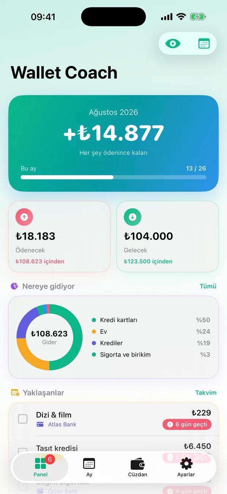
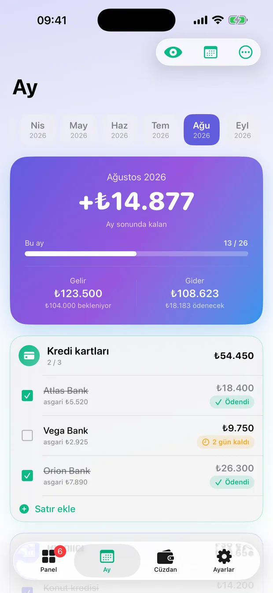
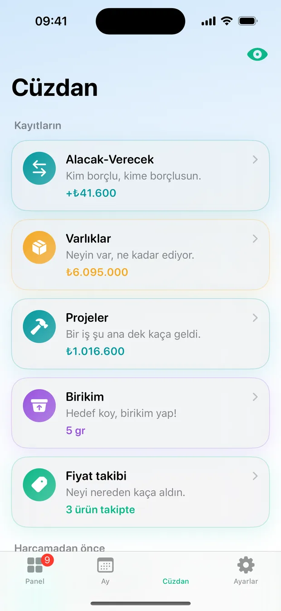
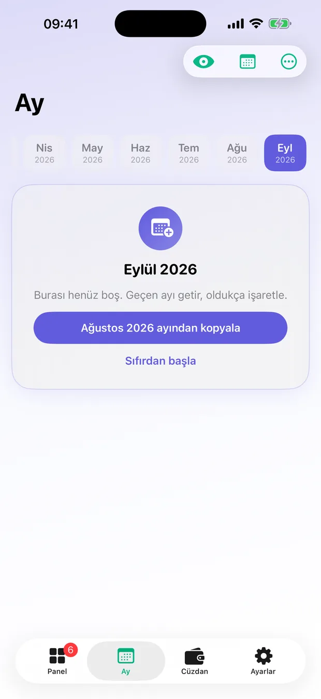
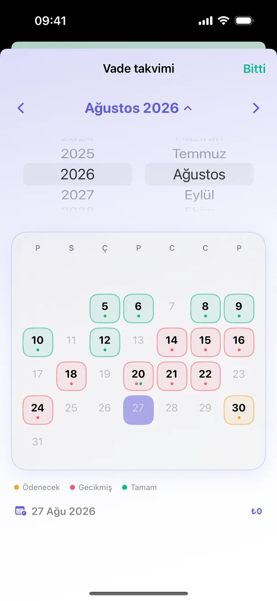
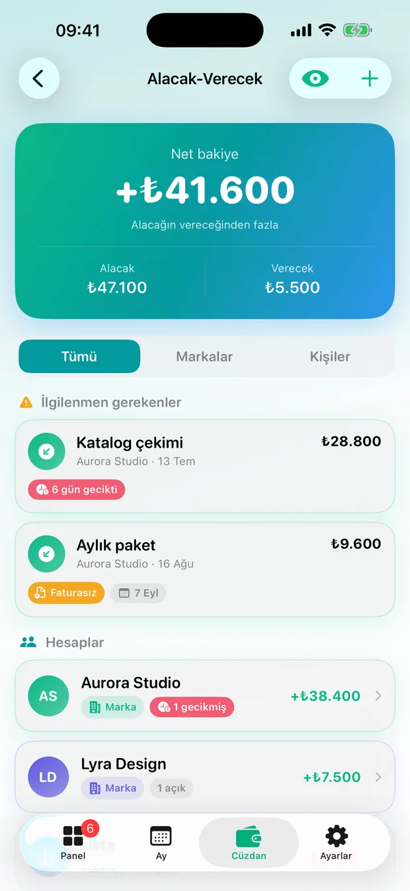
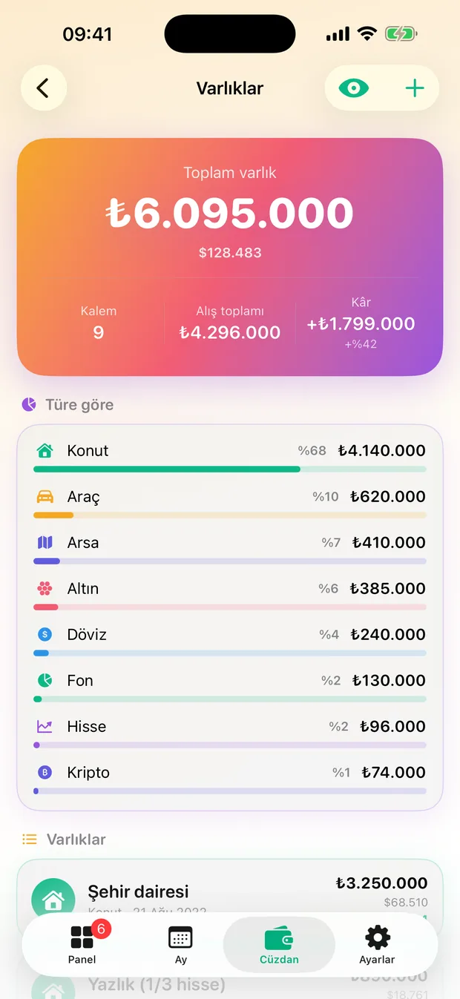

Gizli modHidden mode
Her ekranın sağ üstündeki göz düğmesi bütün rakamları *** yapar. Otobüste açmak için.
The eye button on every screen turns every figure into ***. For opening it on the bus.

iPhone · App Store'daiPhone · On the App StoreEv ekonomisini bir bütçe uygulaması gibi değil, Excel'deki ay sekmeleri gibi tutar. Ayın gelirini ve giderini bir kez yazarsın, geldikçe ödedikçe işaretlersin, yeni ay tek dokunuşla öncekini kopyalar.
Keeps the household books the way a spreadsheet with a tab per month does, not the way a budgeting app does. You write the month down once, tick things off as they come in and go out, and the next month copies itself.



Ekranın tepesindeki rakam bakiyen değil — her şey ödendikten sonra elinde kalacak olan. Bütçe uygulamaları bunu genelde söylemez; asıl merak edilen şey budur.
The figure at the top is not your balance — it is what will be left once everything is paid. Budgeting apps rarely say this outright, and it is the thing people actually want to know.
Yerini aldığı Excel'deki gibi: Ağustos'u düzenlemek Temmuz'u değiştirmez. Satırlar bölümler altında toplanır — kredi kartları, krediler, ev, sigorta, abonelikler, gelirler.
Like the spreadsheet it replaces: editing August does not touch July. Lines sit under blocks — cards, loans, home, insurance, subscriptions, income.
"Her ay tekrarlansın" işaretli satırlar yeni aya geçer; tek seferlik olanlar geçmez. Ay başında sıfırdan yazmazsın, sadece değişeni düzeltirsin.
Lines marked "repeats every month" come across; one-offs do not. You do not start the month from a blank page, you only correct what changed.

Panel ve Ay sekmelerinin sağ üstündeki takvim düğmesi ayı gün gün açar. Dolu günler işaretli; bir güne dokununca o günün satırları gelir.
The calendar button at the top of the dashboard and the sheet opens the month day by day. Days with something on them are marked; tap one to see its lines.

Ay tablosundan ayrı bir defter, bilerek. Arkadaşına verdiğin borç bu ayın gideri değil; ay toplamına karıştırmak ikisini de bozardı.
A separate book from the monthly sheet, on purpose. Money you lent a friend is not this month's expense, and folding it in would wreck both figures.

Ev, arsa, araç, altın, döviz, hisse, fon, kripto, mevduat. Değeri sen girersin — uygulama canlı bir kur servisi çağırmaz.
Property, land, vehicles, gold, currency, shares, funds, crypto, savings. You set the values yourself — the app does not call a live price feed.

Defterler üstte, ara sıra açılan hesaplayıcılar altta. Hepsi tek bir soruya bakıyor: bu para gerçekten neye mal oluyor?
The books at the top, the occasional calculators underneath. All of them ask one question: what does this money actually cost you?
Hesap açmak yok, giriş yapmak yok. Ne kadar kazandığın ve neye borçlu olduğun hiçbir sunucuya gitmiyor.
No account, no sign-in. What you earn and what you owe never reach a server.
Her ekranın sağ üstündeki göz düğmesi bütün rakamları *** yapar. Otobüste açmak için.
The eye button on every screen turns every figure into ***. For opening it on the bus.
iCloud Drive'a otomatik, ya da düz bir dosya olarak kendine gönder. Sunucu yok, şema yok — dosyayı yeni telefonda açarsın.
Automatic to iCloud Drive, or a plain file you mail to yourself. No server, no schema — you just open it on the new phone.
Seçtiğin aylar PDF ya da CSV olarak çıkar: ay tablosu, defter ve varlıklar birlikte.
Any range of months as PDF or CSV: the sheet, the ledger and the portfolio together.
Türkçe, İngilizce, Almanca, İspanyolca, Fransızca, Portekizce, Rusça. Para birimini ayrıca seçersin.
Turkish, English, German, Spanish, French, Portuguese, Russian. The currency is a separate choice.
Ücretsiz sınır bir deneme süresi değil: hatırlatmalar, takvim ve gizli mod hep ücretsiz. Alışkanlığı kuran şeyler bunlar.
The free tier is not a countdown: reminders, the calendar and hidden mode stay free for good. Those are the parts that build the habit.
SüresizNo time limit
Aylık abonelik ya da tek seferlik ömür boyuMonthly, or a one-off lifetime purchase
Android sürümü hazır, şu an kapalı testte. The Android build is finished and currently in closed testing.